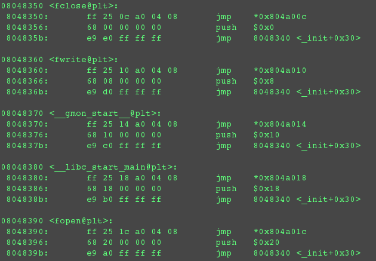
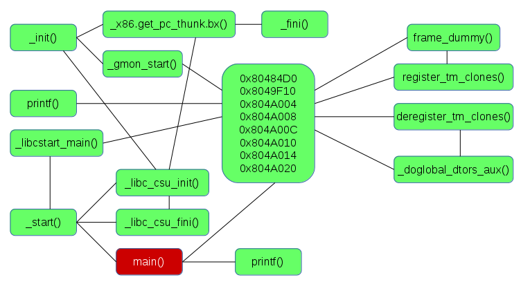

Executable File Structure (Portable Execuable)
The good thing about UNIX systems is they could read
.exe files as archives, which means their contents can be extracted and viewed as a file/directory structure. Most the Portable Executable headers are shown as individual files and directories.
There are nine possible section headers in the executable format, which marks it out as an application for Windows NT, but AccessEnum.exe uses just the following:
- .text: Main code instructions here.
- .debug: Debug information and references to debug sections in .rdata.
- .rdata: Generally read-only data and persistent handles go here.
- .data: Strings used and displayed by the executable at runtime.
- .rsrc: Resources used within the executable. Icons, bitmaps, etc.
But this doesn’t tell us much about the resources the program uses when running. The file can be dissected using the
binutils set of utilities.
objdump
To dump the object code and discovered strings:
objdump program.exe -s
To translate the bytecode to assembler:
objdump -d
Using objdump we can get the section headers used and their virtual memory addresses:
$objdump -h AccessEnum.exe
Also, objdump also provides a list of DLLs, their associated handles used by the executable and their virtual memory addresses:
$objdump -p AccessEnum.exe
Out of curiosity, I also ran objdump against XeroCrypt.exe, a small application I developed some years ago. As expected, the import tables were instead found in .text because my application simply consisted of calls to .NET components.
strings
Attempting to open a compiled program in a text editor would show unintelligible output. The strings utility enables us to extract strings from a compiled binary. e.g.
strings program.exe
Usually this results in a lot of output. To get around this, we can limit the output to strings over x number of characters, or search the output for a specific string:
strings program.exe | grep [keyword]
strings program.exe -n [num of characters]
Another way to access the strings is to read the .rdata section of the executable.
Functions and Data Structures
Two other programs included with binutils can be used to determine the structure of a compiled program. The nm utility searches a binary for data structures and functions called during runtime.
The objdump utility reads the file's bytecode and translates it into the assembler instructions.
Dissasembling an Executable
Now the memory addresses and general purpose of each section is known, it’s possible to start making deductions about what the program does by examining the contents of those memory locations in a disassembler. The information should be displayed in a text field in whatever disassembler’s being used for this.
I loaded an EXE into
Bokken, and moved directly to the
.text section where the program’s instructions themselves should be. To the left, we can see the virtual memory address (0x1000) and the size (0xf18) match the objdump output, so this was definitely the right section.
The output is typically x86 assembler instructions, and certain sequences are directly translatable to generic C programming structures, which is how a disassembled program’s function could be derived. See the first chapter of
The Shellcoder’s Handbook and
Appendix E of Programming From the Ground Up for examples of this.
The sections of code separated by dashed lines are discrete functions. Taking just one of these functions:
push esi
mov esi, ecx
mov ecx, [esi+0x1c]
test ecx, ecx
jz 0x0000103d
Memory register
ESI seems the main one used here, and as I understand it,
ESI differs from other registers in that it holds 32 bits, unlike the 8-bit or 16-bit segment registers.
The first instruction pushes the contents of
ESI (which could be anything) onto the stack, then the contents of
ESI are replaced with whatever’s in
ECX. The contents of
ECX in turn is replaced with whatever’s stored at address
ESI +0x1c.
The last two instructions check the value stored in register
ECX, and if
ECX=0 the program jumps to address
0x0000103d.
So what does that mean? It seems like our function was designed simply to check a specific value within a memory register. It’s almost impossible to determine exactly why – that would be a matter of translating every function into pseudo-code before stringing it all together. Probably.
Using GDB for Reverse-Engineering
For this I used just two utilities that should be present on a typical Linux system: the Gnu Debugger and objdump. The following commands are quick methods of getting straight into disassembling the executable sections of an ELF file:
(gdb) disas /m main
Or:
$objdump -d [file name]
The first disassembles the main() function of whatever program was loaded into GDB. The $objdump -d command is useful for analysing shared objects, as its output enables us to look at what’s inside each function.
Why disassemble an executable into something that’s much harder to understand than decompiled code? That’s a very interesting question. I suppose it’s because the bytecode of an executable is directly translatable to assembler instructions, with less chance of error. A decompiler would have to go a step further and accurately group assembler instructions to recreate higher-level code, which is a task better performed with human expertise.
Reverse-Engineering a Simple Program
When looking at the output of a disassembled execuable, the first three instructions are what some refer to as a ‘prologue’, which sets up the stack. This initialises the stack pointer by pushing the base pointer address (EBP) onto the stack, then setting that as the current stack pointer address (ESP), so the stack pointer should increment from that address as data is pushed onto the stack. The third instruction forces the stack pointer address to become a multiple of 16 by ANDing the bits with 0xFFFFFFF0. Next, subtract 16 bytes (0x10) from the stack pointer address. With this section of code it becomes possible to identify the beginning of a function in a disassembled executable.
Offsets that are positive or negative to the base pointer address should indicate whether data is being pushed onto the stack or the heap.
For example, a program would fetch the contents of an address within the .rodata section of the executable), push it onto the stack and update the stack pointer. The code would look something like:
movl $0x80484D0, (%esp)
If a program prints a string, the data is fetched from the .rodata section address immediately before printf() is called.
Calling Functions
In the past I’ve discussed function calls as direct references to something in a linked object such as a DLL or .so. file. Obviously it doesn’t happen exactly like that here, as there are references to entries in a ‘Program Linkage Table’. This exists in the .plt section of the executable.

I’m assuming the value at this address is the location of the actual printf() function in the linked object. I’m also assuming, therefore, that the printf(), when called, automatically fetches and handles whatever’s at the top of the stack.
Mapping the Program
When all sections of the executable are disassembled using objdump, other stuff that was statically linked when the program was compiled are listed, and this is where the workings of our simple ‘Hello World’ program become far more complex.
Even if we don’t fully understand the assembler code, this is enough to identify the start of each function (the prologue), the functions they’re calling and the parameters being passed between them. We’re also able to identify addresses and offsets among the many hexadecimal values in the code. This should enable us to develop a map of the program and get a fairly detailed view of what it does.

By looking at the map, we can see that certain address ranges are important. Why? Looking at the output of objdump, these addresses are pointers to other sections of the executable, such as .rodata, the Global Offset Table and .bss.
The other functions being called exist in the libc module (/lib/i386-linux-gnu/libc-2.19.so), and this can also be disassembled to see the functions themselves. This isn’t much for an isolated executable that uses native libraries, but it’s very useful when examining an executable that could be malware.
Working with Variables
After compiling and disassembling a 'Hello World' program, we should see function calls for printf() and scanf(), and some jump instructions for the branching statements. We also expect to find variables being compared to a static variable.
There are a couple of noteworthy things about the way such a program works. First of all, fixed data isn’t pushed onto the stack directly. They are again stored and read from another part of the executable. Secondly, the user-defined variable is compared with a value built into the code.
Flow control can be identified by the jump instructions and the CMP (compare) instructions preceeding them, commonly compared to something in register EAX.
User input that does not match either of the above conditions will cause the program to execute until the JMP instruction, which jumps to whichever address. Here 0x0 is moved into EAX (clearing the register?) and the function is exited.
Writing to File
This uses the fopen(), fwrite() and fclose() functions to stream I/O to a file. The function calls for fclose(), fwrite() and fopen() are in the Private Linkage Table. These entries in the PLT again refer to the functions within the libc module.
What about the strings that are passed to fopen() and fprint()? These also live in the ‘.rodata’ section of the executable. As before, the strings to be written, inluding the file path are fetched from .rodata before the functions are called.
Decompiling
This operation is a little harder to perform, as it involves the discovery of high-level programming structures within assembler code and grouping instructions into functions.
Some free decompilers are available, including the Reverse Engineering Compiler (REC).
References
CAPRINO, G. 2015.
REC Studio 4 - Reverse Engineering Compiler. [WWW].
www.backerstreet.com/rec/rec.htm. 21st April 2017.
FREE SOFTWARE FOUNDATION. 2014.
GNU Binutils. [WWW].
www.gnu.org/software/binutils/. 21st April 2017
TESO, H. 2015. Bokken.
Documentation How to.... [WWW].
http://bokken.re/docu.html. 24th April 2017.